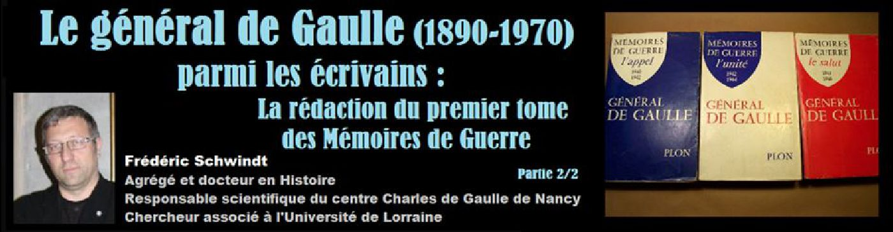
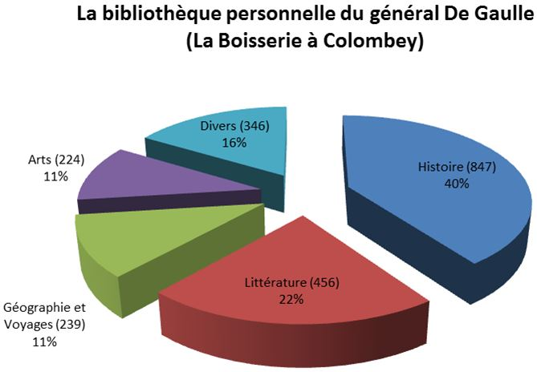
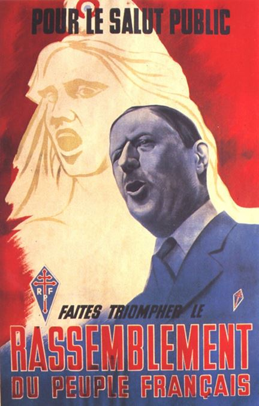

Le général de Gaulle (1890-1970) parmi les écrivains : La rédaction du premier tome des Mémoires de Guerre (partie 2)
par Frédéric SCHWINDT

II – LES REFERENCES INTELLECTUELLES ET LES MODELES LITTERAIRES DE DE GAULLE
Si De Gaulle trouve sans conteste sa place dans le milieu intellectuel français et si on peut le situer par rapports aux « grands ancêtres », la question se pose de ce qu’il en a retenu. Quelles sont finalement ses références intellectuelles ?
1 – La famille de Gaulle
De Gaulle est né à Lille où sa maison natale est devenue un musée. Le nom est toujours un hasard mais imaginons ce qu’il a pu signifier pendant la guerre. Les auditeurs qui écoutaient secrètement la BBC – ils prenaient de gros risques - entendaient en effet de Gaulle avec un seul « L » et voilà le nouveau héros assimilé à Vercingétorix et à la résistance perpétuelle à l’envahisseur ! Ils imaginent même que c’est un pseudonyme. Il ne faut pas oublier que le Général est à l’époque un inconnu, sauf bien sûr dans le petit monde de l’Etat Major. Or, un homme qui s’appelle de Gaulle et qui appelle à la résistance au nom de la France, c’est presque trop beau. Mais c’est son vrai nom.
Une partie de sa famille vient d’Irlande, peut-être de la petite noblesse mais attention la particule ne veut rien dire de tel. Il appartient à la bourgeoisie mais plus à une bourgeoisie du savoir, qu’une bourgeoisie d’argent. Lui-même est d’ailleurs resté toujours très détaché vis-à-vis de l’argent. Son grand-père était historien, historien de Paris notamment et c’est peut-être de lui que de Gaulle a hérité de son goût pour le passé. Son père est professeur dans une école catholique, à une époque difficile, celle de querelle entre l’école publique et laïque et l’école privée. Mais il n’est pas pratiquant au contraire de la mère du général. Alors qu’elle serait orléaniste, il serait plutôt de sensibilité royaliste et même légitimiste. Voilà qui aurait pu faire pencher de Gaulle (et sur cette seule base, certains y ont cru) vers le conservatisme le plus étroit voire la réaction.
Or, au cours du XIXe siècle, le courant légitimiste a joué un rôle important dans la réflexion sociale, domaine où il a parfois rejoint des tendances venues de la gauche voire de l’extrême gauche : interdiction du travail des enfants, limitation du temps de travail, lois sur les assurances sociales… Comme plusieurs des leaders de se mouvement, De Gaulle père fait partie de ceux qui se sont ralliés, par raison, à la République à la fin du XIXe siècle. De là vient sans doute une certaine proximité entre la famille de Gaulle et un courant politique qui est en train de naître à cette époque charnière : la démocratie chrétienne. Dans les années 1930, De Gaulle donne en tout cas plusieurs fois des conférences dans des cercles proches du Sillon de Marc Sangnier (1873-1950). Il s’intéresse aussi au courant philosophique qui accompagne ce mouvement, sans ce confondre avec lui, le personnalisme chrétien d’Emmanuel Mounier (1905-1950), le fondateur de la revue Esprit.
Malgré tout, si l’officier a des convictions dans ce domaine, comme la nécessité de ramener l’individu au centre du débat, il est très difficile de savoir ce qu’il en ait de ses convictions religieuses. Dans ce domaine, là aussi, il cultive une certaine pudeur et une stricte séparation entre l’homme public et l’homme privé. En tout cas, cette influence familiale le protège d’une certaine manière de l’attirance alors très forte de l’Action Française sur les milieux catholiques. C’est le journal de Charles Maurras (1868-1952) puis un mouvement politique d’extrême droite très réactionnaire qui combat la République, les droits de l’homme et la démocratie et n’hésite pas à couvrir d’injures (la liberté de la presse était encore plus large qu’aujourd’hui) ses ennemis : les juifs, les étrangers, les protestants, les francs-maçons etc. Sans conteste, de Gaulle est un républicain et un démocrate, ce qui ne l’empêche pas d’être très critique face au fonctionnement de la IIIe République.
2 – La culture d’un homme de la génération 1910
De Gaulle appartient à un milieu où la culture est mise au-dessus de tout. Le professeur Alain Larcan a consacré un travail important à rechercher, dans les milliers de pages écrits par de Gaulle, les références et les influences afin de déterminer quel était son paysage mental. Il en a trouvé des milliers tant chez les anciens ou les modernes que chez les moralistes, les romanciers, les dramaturges ou les historiens… L’étude de sa bibliothèque montre par exemple un intérêt méconnu pour la médecine. Futur maire de Troyes, Robert Galley qui était à l’origine ingénieur raconte comment il a un jour été convoqué par le président de la République qui voulait se faire briefer sur les problèmes relatifs au nucléaire. De même, alors qu’il vient lui-même d’un milieu catholique, de Gaulle s’est montré relativement ouvert sur la question de la légalisation de la contraception. Mais la culture des gens de cette génération était d’abord une culture classique, très large et très poussée, recueillant en fait toutes les lectures qui faisaient autrefois l’honnête homme. Il connaît d’ailleurs des centaines de pages par cœur.
Les œuvres complètes du Général comportent 28 volumes dont douze de lettres, notes et carnets publiés après sa mort. C’était donc avant tout un homme de l’écrit. Selon Claude Mauriac (1914-1996) et d’autres collaborateurs, il lisait en moyenne trois livres par semaine même dans les époques de très grande activité, comme si la fréquentation des auteurs permettait à l’homme politique de faire avancer sa réflexion et de prendre solitairement ses résolutions. Un de ses derniers collaborateurs, Pierre-Louis Blanc décrit assez bien son univers : « Ce cabinet aurait pu être celui d’un savant, d’un philosophe, d’un bénédictin, hommes pour qui la raison essentielle de l’existence est la réflexion sur la vie, qu’elle prenne le chemin de la science, de la pensée ou de la foi (…) Son royaume (était) celui des livres. Il écrivait au milieu d’eux, les consultait sans cesse, aimait à en parler comme il l’avait fait toute sa vie… Il relisait, puisant dans les ressources de sa vaste bibliothèque, les ouvrages des écrivains qu’il considérait comme des pères en littérature. ».
La bibliothèque du général de Gaulle comportait plus de 2000 ouvrages dont bien sûr beaucoup de cadeaux reçus lors de ses déplacements. Elle révèle néanmoins assez bien ses goûts. Notons tout de suite la part extrêmement importante de l’Histoire : 847 livres soit 40 % du total. De Gaulle s’intéresse aussi beaucoup à l’art et aux voyages (certains de ces livres lui ont servi à préparer des déplacements officiels).
En revanche, dans sa jeunesse, à une époque où les rêves des jeunes officiers guidés par Lyautey et Marchand allaient vers l’outremer, vers l’Afrique ou l’Extrême Orient, les regards et l’imaginaire de De Gaulle sont étroitement circonscrits à l’Europe voire même au territoire national. Au début des années 1930, affecté au Levant, en Syrie, il le dit d’ailleurs très honnêtement : « J’allais vers l’Orient complexe avec des idées simples… ». Cependant, à l’époque de la France Libre, au début de l’épopée du RPF et bien entendu au cours de ses deux mandats présidentiels, il a énormément voyagé. En Afrique de l’Ouest, on trouve encore aujourd’hui des « degol », des petites figurines très simplifiées formée d’un tronc, d’une tête et de deux bras formant le « V » de la Victoire. Un ethnologue a même décrit une tribu qui a fait de lui un esprit protecteur.
En même temps que pour l’histoire, le Général a un goût prononcé pour la géographie, une matière importante à l’époque à Saint-Cyr où les élèves apprenaient, en même temps que la trigonométrie, à lever des cartes. Or, De Gaulle a rédigé plus tard diverses études sur les frontières notamment sur la faiblesse des frontières naturelles, ce qui est normal pour un militaire chargé de les défendre. S’il a acheté une maison en Haute-Marne, à Colombey-les-Deux-Eglises, ce n’est pas non plus un hasard, c’est parce que le village se trouve à mi-chemin de Paris et des grandes villes de garnison de l’Est. Même sa conception de l’Histoire est très liée à celle de la Géographie. Or, à l’époque, une nouvelle école est en train de naître en France, en Histoire comme en Géographie, une école qui a tendance à vouloir lier les deux approches. En cela, de Gaulle était donc très moderne !
3 – Les références politiques de De Gaulle passent par des écrivains
Mais comment situer politiquement de Gaulle ? Peut-être en regardant du côté de ses influences. C’est d’abord la figure de Charles Péguy (1873-1914). Ce normalien venu de l’extrême gauche, passé au catholicisme et au nationalisme au début du XXe siècle, s’engage pourtant farouchement en faveur de Dreyfus et il est tué, comme beaucoup de jeunes écrivains, dès les premiers combats de 1914. C’est aussi Maurice Barrès (1862-1923), un lorrain, le plus grand et le plus connu des écrivains français de cette époque.
Maurice BarrèsUn de ses plus célèbres romans, « Les Déracinés », raconte l’histoire d’un groupe d’amis, élèves du lycée de Nancy et leurs parcours dans la France des années 1880-1900, époque où la IIIe République traverse plusieurs crises graves : l’Affaire Boulanger, l’affaire de Panama (un scandale politico-financier) puis l’affaire Dreyfus. Le héros se lance dans le journalisme puis dans la politique en devenant député de Bar-le-Duc, soit la vie à peine adaptée de Barrès qui est natif de Charmes et a été lui-même élève du lycée de Nancy. Après un début de carrière parisien dans le journalisme, il est revenu se faire élire député de la cité de Stanislas.
A cette époque, en 1896, on peut le classer à la fois à l’extrême gauche et à l’extrême droite, un mélange dont certains historiens ont fait le terreau originel du fascisme. C’est en tout cas un homme et un écrivain déroutant. Il soutient la droite nationaliste, il a été clairement antidreyfusard et il a écrit des textes ouvertement antisémites (alors qu’il est lui-même d’origine juive). Pendant la guerre, il est accusé par les poilus - non sans raison - de pousser à la guerre à outrance. Pourtant, dans le même temps, il s’excuse de ses anciennes prises de position en rédigeant « Les différentes familles spirituelles de la France ». Il y associe catholiques, protestants et juifs dans un même destin commun. Et là perce l’idée, finalement très républicaine et gaulliste, que chacun, quelques soient ses origines, puisse se revendiquer du roman national français. Maurice Barrès publie enfin, notamment à la fin de sa vie, des romans très personnels, jugés parfois scandaleux par les biens pensants, où il défend l’autonomie de l’individu par rapport à la société et ses valeurs (ce qui est en soit totalement inverse à l’esprit bourgeois et au totalitarisme…)
La grande idée de Barrès, c’est la terre et les morts : l’idée que nous ne sommes pas que nous mais aussi le produit du sol sur lequel nous vivons et surtout des hommes qui nous ont précédés ; notion qui revient aujourd’hui à la mode sous la forme très affaiblie du devoir de mémoire. Avec Péguy et Barrès, de Gaulle est touché par le nationalisme mais pas par un nationalisme fermé, agressif, exclusif comme avec Charles Maurras (sinon de Gaulle n’aurait jamais pu être ami avec l’allemand Konrad Adenauer ou le guyanais Félix Eboué) mais une forme de patriotisme qui est courant dans la génération 1910.
D’ailleurs, et c’est le sens de la toute première phrase des Mémoires, la France est pour lui d’abord une idée et une construction : pas une communauté biologique d’habitants qui auraient une origine commune. En 1944, De Gaulle préside en Afrique la conférence de Brazzaville qui pose les premières bases de la décolonisation. Il y donne un discours célèbre où il prône l’émancipation de l’homme africain.
Le Général de Gaulle et Félix EbouéC’est un moment important car il permet de trancher assez facilement la question de savoir si De Gaulle était ou pas raciste. C’est une question difficile car les mots changent de sens. Le mot « race » par exemple est courant jusqu’à la seconde guerre mondiale et il n’avait pas toujours le sens que nous lui donnons. Et le fait de l’employer ne fait pas de son auteur un raciste. D’un autre côté, De Gaulle vient d’un milieu et d’une époque fertiles en préjugés. Autant donc nous contenter des faits. Ses rapports avec Félix Eboué (1884-1944), premier gouverneur noir d’une colonie française qui s’est rallié à la France Libre, ou avec René Cassin semblent plaider pour le contraire.
En 1910, deux jeunes auteurs, un journaliste et un écrivain, ont lancé une enquêté appelée Agathon qui se donnait pour but de comprendre « les jeunes gens d’aujourd’hui ». Leur idole, c’est Ernest Psichari (1883-1914), un jeune normalien, petit-fils du philosophe Renan et disciple de Péguy, qui, malgré la belle carrière qu’on lui promet, revient à la foi et plaque tout pour s’engager dans l’armée et partir aux colonies.
Il est d’ailleurs tué lui aussi au feu en 1914. Entre temps, il a pu donner deux ou trois livres épiques qui ont enflammé sa génération. Dans un trajet personnel exactement inverse mais porté par la même quête d’absolu, on pourrait aussi citer le père de Foucauld (1858-1916), un saint-cyrien qui abandonne les armes pour la vie religieuse et un ermitage dans les montagnes d’Afrique du Nord. Après un demi-siècle très positiviste, matérialiste et scientiste, cette époque connaît une très nette inflexion vers le mysticisme (avec une vague de conversions, par exemple celles de Paul Claudel ou de Jacques Maritain) voire vers le surnaturel, d’où le succès contemporain du spiritisme. Il est vrai que le philosophe Nietzsche (1844-1900) a entretemps remis en cause pas mal de certitudes et que Freud (1856-1939) a ouvert la voie à l’inconscient. On se met même à douter de l’idée de progrès…
La jeunesse de De Gaulle pose donc déjà les questions qui vont revenir régulièrement par la suite dans la bouche des commentateurs et des biographes. Est-ce un homme de droite ou un homme de gauche ? Est-ce un démocrate ? Est-il croyant ou pas ? De toute façon, le parcours politique ultérieur brouille un peu l’image de l’écrivain. Mais sans politique, pas d’écrivain non plus. Le niveau atteint par de Gaulle, la légende et le mythe rendent surtout difficile l’arbitrage entre ceux qui le déifient (et pourtant de Gaulle a tout fait dans son testament pour empêcher la mise en place d’un quelconque culte de la personnalité posthume) et ceux qui le vouent aux gémonies.
4 – Les amitiés littéraires
En tout cas, il a séduit des écrivains de bords politiques très différents : Malraux par exemple qui vient de la gauche antifasciste des années 1930… et d’autres issus de la droite, même de la droite nationale comme Philippe Barrès, le fils de Maurice. Il a en revanche connu une relation conflictuelle avec certains des plus grands esprits des années 1950 et 1960. Jean-Paul Sartre (1905-1980), par exemple, multiplie les pétitions contre lui ou sa politique. C’est moins le cas avec Marcel Camus (1913-1960) notamment après que de Gaulle ait engagé la décolonisation.
L’expression « amitiés littéraires » est cependant un peu excessive. On n’est en effet pas ami avec de Gaulle notamment parce que c’est un homme qui, pour des raisons de caractère et d’éducation, ne se livre pas. Il vouvoie sa femme et ses enfants, cela n’a rien d’anormal à l’époque, et il tutoie seulement deux ou trois camarades de promotion dont le maréchal Juin. Ses joies et ses peines ne sont jamais exprimées, sauf bien sûr lorsqu’elles concernent la France. En 1948, les contemporains n’ont ainsi jamais rien su de la douleur ressentie par le Général à sa fille Anne. Elle était trisomique. Or, à l’époque, on ne montrait pas, on ne parlait pas d’un enfant handicapé. Pourtant, colonel commandant un régiment de chars à Metz à la fin des années 1930, de Gaulle rentrait chez lui tous les midis, il se mettait en civil et il emmenait sa fille au parc. Cela paraît normal aujourd’hui mais c’était très rare à une époque d’ailleurs où les pères s’impliquaient très peu dans l’éducation des enfants. Qu’on ne s’attende donc pas à découvrir des aspects de vie privée dans les Mémoires. Ce n’est pas une biographie, ni de l’autofiction un genre qui fait flores chez les écrivains d’aujourd’hui.
Le terme d’amitié littéraire est trop fort sauf peut-être avec Malraux. Mais c’est quelque chose qui s’en rapproche, une forme de respect réciproque forgée dans la Résistance. Joseph Kessel (1898-1979), écrivain, journaliste et grand baroudeur, et son neveu Maurice Druon (1978-2009) ont rejoint la France Libre et ils ont écrit le Chant des Partisans, la Marseillaise de la résistance.
Romain Gary (1914-1980), le seul écrivain à avoir obtenu deux fois le prix Goncourt (la deuxième sous un pseudonyme) était pilote dans les Forces Aériennes Françaises Libres avant de mener une double carrière dans les lettres (en français et en anglais) et dans la diplomatie. Il faut aussi citer Georges Bernanos (1888-1948). Ce grand écrivain catholique, qui a vécu à Bar-le-Duc où il a d’ailleurs écrit son roman le plus célèbre, « Sous le soleil de Satan », a quitté la France durant l’Occupation par haine de Vichy. Il a ensuite joué un rôle notable pour faire connaître de Gaulle en Amérique Latine.
Même rapport avec François Mauriac (1885-1970), un romancier issu du même milieu que De Gaulle, plutôt conservateur et très catholique, qui n’hésite pourtant pas, dans les années 1960, à s’engager au profit de multiples causes comme la décolonisation ou la lutte contre la torture. Son fils, lui-même écrivain est le secrétaire de De Gaulle. Le respect demeure donc même lorsque les aléas de la politique ou les choix personnels séparent les individus. C’est le cas avec Mauriac mais aussi avec Raymond Aron (1905-1983). De la même promotion de l’Ecole Normale Supérieure et de l’agrégation de philosophie que Sartre, il a occupé lui aussi une place énorme dans le monde des idées des années 1950-1970. Libéral alors que Sartre se voulait à l’extrême à gauche, professeur de sociologie, il a par exemple joué un grand rôle dans la réflexion sur le totalitarisme ou sur le concept de guerre froide. C’était aussi un grand spécialiste de Clausewitz, le pape de la stratégie. Comme de Gaulle, qu’il avait connu à Londres pendant la guerre, il avait perdu une fille, ce qui avait contribué à rapprocher les deux hommes au-delà des divergences politiques.
Au moment de commencer à écrire ce qui va être sa grande œuvre, de Gaulle doit se situer par rapport à tous ces/ses auteurs. Il y a de l’ouvrage. Il le sait et ne veut pas se contenter d’un récit informatif. Son ambition et dès le départ de favoriser tout autant la forme que le fond. Les premières pages des Mémoires prouvent qu’il avait déjà beaucoup médité avant de prendre plume. Ecrire est même pour lui une nécessité !
III – LES PREMIERS ECRITS (1900-1940)
Chez de Gaulle, il existe en effet une véritable vocation de l’écriture. Un écrivain est quelqu’un qui ne peut pas s’empêcher d’écrire et pour qui cela devient un acte quotidien. Dans le cas présent, ce besoin est apparu très tôt.
1 – La vocation de l’écriture
Dès l’enfance, le colonel Driant a constitué une sorte de modèle. Avec Paul d’Ivoi et quelques autres, il a pris la succession de Jules Verne (mort en 1904) et a dominé la littérature jeunesse (et pas qu’elle car son lectorat était beaucoup plus vaste) du début du XXe siècle en France. De Gaulle adolescent a sans doute lu la « L’Invasion Jaune », un gros et lourd roman qui anticipe une guerre mondiale où la Chine et le Japon envahissent l’Europe. Bien avant 1914 et 1940, quelques années seulement après la révolte des Boxers à Pékin et peu de temps avant la défaite russe contre le Japon en 1905, Driant parle déjà de la guerre psychologique, de la guerre électronique, des gaz de combat et des massacres de masses… Or, dans une rédaction, l’élève Charles de Gaulle invente une nouvelle fin au livre. Dans l’œuvre originale, le Kaiser Guillaume II meurt en chargeant à la tête de sa cavalerie puis la France est envahie comme en 1870. Face à des hommes politiques prêts à toutes les compromissions avec l’ennemi, un petit groupe de jeunes officiers et de jeunes parlementaires décide de continuer le combat outremer, dans une « petite France » réduite à l’Afrique du Nord. Dans son devoir, le jeune Charles s’imagine bloquant l’invasion à la tête des armées françaises. En mai 1940, c’est ce qu’il a effectivement tenté de faire à la tête d’une division blindée. Lors de la bataille de Montcornet, il réussit notamment à stopper pendant quelques heures l’avancée allemande. Peu de temps après, comme dans le roman, il défend au gouvernement (où il a été nommé sous-secrétaire d’Etat à la guerre par Paul Reynaud) l’idée de poursuivre le combat dans les colonies. Devant le défaitisme et l’esprit d’abandon encouragé par Pétain, de Gaulle part finalement à Londres et lance son appel à la résistance. Ce travail scolaire est prophétique. Peut-être de Gaulle s’en souvint-il, dans la nuit du 17 au 18 juin 1940, lorsqu’il tendit, page après page, le texte qu’il était en train de rédiger pour la BBC à son officier d’ordonnance Geoffroy de Courcel.
2 – Du cabinet de Pétain au Secrétariat Général de la Défense Nationale
De Gaulle n’a pas terminé la guerre. En 1916, il est en effet porté disparu devant Douaumont. D’abord on le croit mort. Pétain, commandant en chef du front de Verdun signe même une citation à titre posthume. En fait, il a été blessé et fait prisonnier. Il cherche plusieurs fois à s’évader (un peu comme dans le film « La Grande Evasion ») et il est à chaque fois repris. La dernière fois, il est emmené dans un camp spécial, en forteresse, un lieu très sévère, d’où on ne s’évade pas et qui rappelle un autre film : « La grande illusion » de Jean Renoir. Il ne reste pas inactif. Il lit beaucoup et échange ses analyses avec les autres prisonniers qui sont tous des esprits forts : le général Catroux qui ralliera une partie de l’Empire colonial à la France Libre en 1940 ou un lieutenant de la garde impériale Russe, Toukhatchevski (1893-1937), futur chef de l’armée rouge que Staline fera exécuter en 1937. Un peu comme l’historien Fernand Braudel (1902-1984), natif de la Meuse, dont on raconte qu’il a rédigé sa thèse de doctorat de mémoire, en camp de prisonniers, De Gaulle ne pas peut consulter d’archives. Pour s’occuper, il est donc obligé de s’intéresser au présent.
Il commence donc une réflexion qui va aboutir, quelques années plus tard, en 1924, à la publication de son premier livre : « La discorde chez l’ennemi ». Cet essai analyse, presque encore à chaud, les raisons de la défaite allemande de 1918. A une époque où faire de l’Histoire consiste surtout à étudier des époques très anciennes et à enchaîner mécaniquement les dates et les évènements, il apporte de nouveaux facteurs explicatifs et notamment les facteurs psychologiques. D’une certaine manière, cet ouvrage anticipe un courant très important aujourd’hui, celui de l’Histoire immédiate.
Cependant, le fait de ne pas avoir pu continuer à se battre est à l’origine chez lui d’une frustration terrible. Il n’est plus au feu alors que le sort de la France se joue, notamment lorsque Ludendorff lancent ses coups de boutoirs du printemps 1918 pour percer le front occidental. De là provient son refus absolu, viscéral de ne pas abandonner en juin 1940.
A son retour de Stalag (le camp de prisonnier allemand), il repart donc immédiatement en mission en acceptant un poste de conseiller militaire en Pologne, tout jeune état qui fait alors face à une invasion soviétique. Le voilà au cœur de la nouvelle géopolitique mondiale. De Gaulle comprend à cette occasion que la guerre et la paix ne se résument plus à des conflits réguliers entre états européens (lesquels ont entamé sans encore s’en rendre compte leur déclassement) mais que de nouveaux acteurs et des acteurs majeurs sont entrés dans le jeu : l’URSS (lui dit la Russie car son sens de l’Histoire lui dicte que l’épisode soviétique n’est qu’une étape dans la longue histoire de cette nation) et les Etats-Unis.
Pétain n’a pas oublié son ancien lieutenant de 1912. Il le suit de loin. Or, De Gaulle ne sort pas très bien classé de l’Ecole de Guerre où son caractère et son indépendance d'esprit n’ont pas beaucoup plu. A l’époque, ce qu’on demande à un officier qui veut monter en grade, c’est de se couler dans le moule et de ne pas trop réfléchir. Un commandant d’unité doit appliquer tel quel les plans conçus par des généraux plus intelligents que lui, même lorsque le terrain prouve qu’ils ont tort. Pétain intervient cependant lorsque de Gaulle est affecté dans l’intendance afin de s’occuper des chambres froides des unités stationnées en Allemagne. Il fait en sorte qu’il rejoigne assez vite une unité opérationnelle et il fait donner des conférences à l’école de guerre.
A cette époque, De Gaulle publie un livre important, essai ou livre d’histoire, tous les trois ou quatre ans. Il est soutenu par les éditions Berger-Levraut de Nancy (mais originaires d’Alsace-Moselle) et dont une des spécialités est justement les questions militaires. Au-delà du grade de capitaine, un officier breveté alterne les affectations en unité, en état-major et éventuellement outremer. Après un séjour en Syrie puis le commandement d’un escadron de chasseurs à pied à Trèves ce qui le confronte une nouvelle fois l’Allemagne du traité de Versailles, De Gaulle est affecté comme commandant puis lieutenant-colonel au secrétariat général de la défense nationale. C’est une reconnaissance de ses qualités intellectuelles. Là, il conduit des études, fait des rapports, se trouve au plus près de tout ce qui compte dans l’armée et dans la politique. Il dispose également de temps pour écrire même le poste ressemble aussi à une forme de placard.
Dans le même temps, il entre au service du maréchal Pétain qui a besoin d’auteurs pour rédiger ses discours et publier les ouvrages attendus d’un membre éminent de l’Académie Française. Lorsque Pétain est reçu à l’Académie, il doit discourir de son prédécesseur le maréchal Foch. De Gaulle écrit le texte pour Pétain qui préfère se tourner vers un autre nègre, l’hommage étant trop appuyé en direction de Foch que De Gaulle admire et que Pétain détestait. Premier accroc. C’est que de Gaulle n’est pas souple lorsqu’il s’agit de ses idées et de sa plume. Ils finissent d’ailleurs par rompre lorsque Pétain veut publier sous son propre nom, un livre sur l’histoire du soldat français qu’il avait suggéré à De Gaulle d’écrire. Mais ce n’est pas qu’une question d’égo. L’évolution de la IIIe République et les questions purement stratégiques contribuent également à séparer les deux hommes.
3 – Le théoricien de la Blitzkrieg
Dans les années 1930, Pétain qui n’a jamais été réellement républicain se rapproche de l’extrême droite et notamment d’un groupuscule fasciste, la cagoule, qui prône le terrorisme et le coup d’état militaire. Il accepte de devenir ambassadeur en Espagne, occasion pour lui de se rapprocher du dictateur Franco. Au niveau intérieur, Pétain qui est le dernier survivant des maréchaux de la Première Guerre Mondiale et qui jouit d’une grande autorité au sein du conseil supérieur de la guerre, couvre de son aura la fossilisation de la doctrine stratégique française. Pour simplifier, la France prépare la Première Guerre Mondiale, pas la Seconde : une guerre de tranchées, de fantassins et de pigeons voyageurs… Une guerre de position appuyée sur les fortifications de la Ligne Maginot.
De Gaulle trouve utile la ligne Maginot, à condition que cette ligne soit achevée : elle couvre l’Est du pays mais pas le Nord d’où est venue l’attaque de 1914 (Plan Schlieffen) afin de ne pas désobliger nos alliés belges. Surtout, il y a un gros trou dans les Ardennes que l’Etat-major juge infranchissables. Mais surtout, il conçoit les fortifications comme une couverture pendant la mobilisation des troupes et comme un appui avant une offensive. Ce qui manque, selon lui, à ce nouveau Limes, c’est un corps de bataille blindé. Attention, après la défaite de 1940, les généraux et Pétain le premier, lors de son discours radio du 17 juin, expliqueront aux Français que les Allemands ont gagné parce qu’ils étaient les plus forts et les mieux armées. C’est faux. En 1940 les Français ont par exemple autant de chars que les Allemands mais ils les utilisent par petits paquets alors que la Wehrmacht est organisée en divisions blindées qui attaquent en masse en se coordonnant avec l’aviation. Les blindés français n’ont même pas la radio. Or, depuis quinze ans, de Gaulle est devenu un des spécialistes de cette arme nouvelle. Ses collègues se moquent d’ailleurs de sa lubie. Chef de corps à Metz, il est même surnommé le « colonel motor ».
En 1934, après de nombreuses notes et rapports, il publie « Vers l’armée de métier » afin de mettre la question sur le devant de la scène. Non seulement, il demande la constitution de divisions cuirassées et la réforme de la stratégie française, mais il avance que cette modernisation nécessite la professionnalisation du corps de bataille (le remplacement des appelés par des soldats de métier bien formé), idée qui a l’époque heurte tout autant la gauche que la droite. De Gaulle profite cependant de sa position pour alimenter des hommes politiques qu’il juge ouvert sur les nouvelles questions, par exemple Paul Reynaud, un parlementaire du centre-droit, ou même Léon Blum, le chef de la SFIO, le parti socialiste de l’époque.
Une des idées de De Gaulle sera tout de même reprise par le Front Populaire, une idée qui choque l’État-major et que le futur auteur des Mémoires voit comme une réaction possible aux Etats totalitaires.
Il s’agit d’élargir la réflexion sur la défense au-delà des milieux militaires en y associant les civils et les citoyens. C’est l’origine d’un Institut qui existe toujours à Paris et qui s’appelle l’Institut des Hautes Etudes de la Défense Nationale (IHEDN). Au-delà, les efforts de De Gaulle restent cependant vains… sauf peut-être chez l’ennemi. En 1945, lorsque la 2e Division Blindée du général Leclerc est arrivée à la maison d’Hitler, un officier français a trouvé dans la bibliothèque du Führer une édition allemande de « Vers l’armée de métier » annotée dans les années 1930 par le général Guderian. C’est ce même général, théoricien de la Blitzkrieg (la guerre éclair) avait dirigé l’offensive dans les Ardennes en 1940…
4 – L’Appel du 18 Juin : un texte énorme
Il faut lire et relire l’appel du 18 juin, comme un texte histoire mais aussi comme un texte littéraire. Non pas la version abrégée qui a été imprimée pour être placardé sur les murs de Londres puis diffusé clandestinement en France mais la version complète. L’appel original n’a pas été enregistré et celui que l’on entend parfois est un tout petit peu différent et il date du 22 juin. Il a été entendu par très peu de gens (bien moins que ceux qui jurent que c’est le cas) mais il s’est très vite répandu par le bouche à oreille. Les phrases les plus essentielles ont été mémorisées et répétées bien que le document ne commence à circuler sous le manteau. Cela a été possible parce que le texte est d’une qualité exceptionnelle.
En une page, tout est dit ! De Gaulle avait compris, comme Churchill ou Roosevelt, la force de la radio, à condition bien sûr de préparer des textes adaptés à ce média. Des hommes politiques de l’époque se contentaient alors de lire leurs longs discours avec un ton d’avocat ou d’acteur de la comédie française.
De Gaulle sait surtout que la radio permet de créer une tension particulière avec l’auditeur. En mai 1968, après les évènements que l’on sait, il saura créer le vide en disparaissant durant quelques heures (en Allemagne à Baden Baden) avant de réapparaître et de s’exprimer à la radio et non à la télévision afin justement de profiter de cette tension.
En tout cas, pour beaucoup de Français, de Gaulle a d’abord été une voix. L’appel a donné un espoir alors que Pétain demandait aux Français de se résigner. Mais les gens ne savent pas à quoi il ressemble, sauf à Bar-le-Duc… Le photographe Althuser (grand-père de celui qui occupe toujours le même magasin boulevard de la Rochelle), qui devint peu après un des chefs de la Résistance dans le sud-meusien, détenait un cliché de De Gaulle colonel à Metz avant-guerre. Il l’a reproduit et diffusé afin de permettre aux barrisiens de mettre un visage sur une voix.
L’appel du 18 juin et un petit bijou. Il y a quelques années, Maurice Druon, ancien secrétaire perpétuel de l’Académie Française, en a fait une présentation au palais des congrès de Nancy. Plutôt qu’une analyse historique ou politique, il avait préféré l’aborder sous l’angle littéraire : la langue, le style, la grammaire, la syntaxe, le vocabulaire. Il surtout montré combien ce texte avait été très travaillé. On sait aujourd’hui que De Gaulle n’est pas parti de rien dans la nuit du 17 au 18 juin 1940 et qu’il avait déjà écrit plusieurs brouillons dans les semaines précédentes. Chaque mot est choisi, chaque formule est pesée. Il faut en effet expliquer en quelques phrases des choses compliquées de la géostratégie mondiale (les Etats-Unis et l’URSS entreront un jour dans la guerre et cela va tout changer par exemple) et surtout donner des perspectives alors que les Français n’ont qu’une vision très étroite du conflit. Dans le même temps, Pétain en profite d’ailleurs pour essayer de convaincre les Français que la guerre était purement franco-allemande et qu’elle est finie.
Ce texte est déjà beaucoup plus qu’un appel à la résistance. C’est un texte politique. Comme dans les Mémoires, De Gaulle pose en effet la question de ce que c’est que la France. Pas seulement un territoire ou un peuple, mais aussi une idée. Or, en l’occurrence, Vichy (la France de Vichy c’est-à-dire l’Etat Français de Pétain) décidant de déposer les armes (et de collaborer avec les nazis, et d’adopter une législation antisémite) a perdu selon lui toute légitimité. Pour de Gaulle et René Cassin qui va poser les bases juridiques de la France Libre, la France se trouve là où des hommes (pas tous des Français d’ailleurs) se battent au nom des valeurs qui constituent la France… Voilà pourquoi, il ne se contente pas de monter une organisation militaire, les FFL – Forces Françaises Libres pour combattre aux côtés des alliées, mais tout de suite une organisation politique, un gouvernement français libre. Donc, ses mémoires ne sont pas, contrairement au titre, que des Mémoires de Guerre.
IV – LA REDACTION DES MEMOIRES DE GUERRE
Retiré du gouvernement en janvier 1946, le Général, qui a suspendu son mouvement le RPF au milieu des années 1950, entreprend la rédaction de ses Mémoires de guerre. Ce ne sont pas les seules publiées par de Gaulle. En 1969, après sa démission de la Présidence de la République, il entreprit aussi le récit de ses années à la tête de l’Etat mais il n’aura le temps de terminer que le premier volume.
1 – Comment de Gaulle écrit ?
De Gaulle écrit seul, tous les matins, à son bureau de la Boisserie à Colombey. Il a acquis cette maison avant-guerre puis racheté les terrains en face de sa fenêtre afin de gagner de la perspective et de ne pas être gêné. Le bureau en lui-même est un lieu sacré et madame de Gaulle sait faire régner le silence dans la maison quand il travaille. Il s’occupe d’abord de sa correspondance, beaucoup de lettres, des dizaines. Il rédige aussi lui-même ses discours et les apprend par cœur, autant pour des raisons de communication qu’à cause de ses problèmes de vue. Enfin, il écrit ses mémoires mais pas dans le même état d’esprit en 1946 et en 1969.
En 1969-1970, quand il s’attaque au premier tome des Mémoires d’Espoir qui doivent raconter son retour au pouvoir et les débuts de la Ve République, il sent son temps compté. Pour lui, il l’affirme à ses proches, « La vieillesse est un naufrage ». Il va plus à l’essentiel et cherche moins à confronter ses souvenirs aux archives. C’est l’heure des bilans. Pour la première série, en revanche, il s’est appuyé sur un petit cabinet dirigé par Olivier Guichard rue de Solferino (là où se trouve aujourd’hui la Fondation Charles de Gaulle). Il ne lui demande pas d’écrire, comme le faisait Churchill, mais de lui retrouver tel ou tel document (d’où les annexes des trois tomes). Il dispose en effet de temps pour la réflexion et la recherche de la bonne formule.
2 – La traversée du désert : un temps de retour sur soi !
Donc de Gaulle veut raconter son parcours durant la guerre. Mais ce qu’il est devenu, au moment où il entreprend d’écrire, change complètement la perspective. De plus, les péripéties de la France Libre sont narrées par quelqu’un qui se lance au même moment dans une nouvelle aventure, celle du RPF entre 1947 et 1953. Ensuite, il paraît couper tout lien avec le monde politique (même s’il continue de suivre les choses de prêt). Personne ne croit en effet à son retour aux affaires, surtout pas madame de Gaulle ! C’est ce que les historiens appellent « La traversée du désert ». En plus de la tentation, toujours présentes chez les grands hommes (et les petits) de l’autojustification, les Mémoires de Guerre peuvent lui permettre d’occuper encore le devant de la scène et, par la présentation de son action passée, de le faire apparaître comme un recours possible en cas de crise grave.
D’abord, on ne peut pas comprendre les Mémoires si on ne se rend pas compte du traumatisme constitué par la défaite du printemps 1940 (même si certains comme Maurras ont très vite été très heureux de cette défaite surprise qui leur permettait de prendre le pouvoir). Au niveau personnel, c’est aussi le problème moral d’un homme, d’un serviteur de l’Etat et d’un militaire qui se voit obligé de désobéir (et qui est condamné à mort par contumace pour cela). Or, De Gaulle intellectualise. Il explique son choix par une réflexion, par un examen rationnel des faits. Etait-ce si simple ? Comme pour beaucoup de résistants, sans aller jusqu’à évoquer l’inconscient, cette décision puise au tréfonds de la personne et elle garde une part de mystère.
3 – Etre du côté des vainqueurs
Durant la guerre, de Gaulle affronte deux problèmes. D’abord faire reconnaître la France Combattante par les alliées et lui donner une vraie valeur militaire (ce qui est acquis après la bataille de Bir Hakeim en Libye en 1942 et a fortiori après le débarquement en Italie). Cela doit faire oublier l’armistice honteux de 1940 et permettre à la France d’être du côté des vainqueurs : le 8 mai 1945, le général de Lattre de Tassigny signe effectivement l’acte de capitulation de l’Allemagne et la France obtient un siège permanent au conseil de sécurité de l’ONU. En même, il s’agit aussi pour lui et son gouvernement d’obtenir une vraie légitimité tant sur le plan international (difficile côté américain) qu’à l’intérieur de la France (d’où la mission donnée à Jean Moulin, l’unification de la résistance et la création du CNR). Cela va permettre au gouvernement provisoire de s’installer en France à la Libération et d’éviter au pays une occupation par l’administration américaine (AMGOT). Il combat en permanence l’idée selon laquelle il aspire à une carrière de dictateur militaire (d’où la création d’une assemblée consultative à Alger et l’accueil fait à certaines personnalités de gauche) et annonce clairement qu’il souhaite rétablir, tant sur le fond que sur la forme, la République. Mais quelle république ? C’est la question qui occupe l’essentiel du tome III.
4 – Refonder la République
En janvier 1946, De Gaulle démissionne de la présidence du gouvernement provisoire. Officiellement, c’est parce que les partis politiques se déchirent et ne lui permettent plus de gouverner sereinement. Plus fondamentalement, c’est le projet de république qui pose problème. La majorité des parlementaires penche en effet pour une constitution proche de celle de la IIIe République, régime où le président n’avait aucun pouvoir et où l’exécutif (le gouvernement) était très faible face au pouvoir législatif.
De Gaulle quitte donc le pouvoir mais pas la vie politique. D’abord, il reste très populaire. Il voyage en province et fait des discours. A Bayeux, en Normandie, il présente sa vision de la république et trace les grandes lignes de ce qui sera, après 1958, la constitution de la Ve. A Bar-le-Duc, en 1946, sur une estrade au bout du boulevard de la Rochelle, il parle de la guerre froide qui s’annonce. L’année suivante, en 1947, il annonce enfin à Strasbourg la fondation d’un grand mouvement politique : le Rassemblement du Peuple Français – RPF. Il ne veut pas, mais c’est en grande partie une utopie, que ce soit un parti situé à un endroit précis de l’échiquier politique ou qui défendrait une idéologie mais un rassemblement chargé de tracer une troisième voie entre la gauche et la droite, grâce notamment à la participation des travailleurs au fonctionnement et aux bénéfices des entreprises. Le lancement du RPF est un très grand succès militant. Le mouvement gagne la plupart des grandes villes aux élections municipales de 1947 dont Verdun avec Hippolyte Thévenon et Bar-le-Duc avec Jean Jeukens (celui de la médiathèque) qui avaient été deux des principaux chefs de la résistance en Meuse
Mais rapidement, les partis politiques interdisent à leurs membres d’adhérer au RPF. Les militants et les élus doivent choisir, ce qui conduit le Rassemblement à devenir un mouvement comme les autres. Tous les gaullistes ne sont d’ailleurs pas au RPF. Et puis une nouvelle loi électorale, dite des apparentements, truque d’une certaine manière les élections législatives prévues en 1951 et que l’on annonçait gagnée d’avance par de Gaulle qui serait alors revenu au pouvoir par la voie parlementaire. Effectivement, si les gaullistes gagnent plus de 100 sièges, la dynamique est cassée d’autant que le Général refuse de jouer le jeu des alliances propre au régime d’assemblée.
A partir de 1953, le RPF est moribond et le général, lui-même, décide de le mettre en sommeil en 1955. Commence alors la phase la plus difficile de la traversée du désert. Personne n’imagine que de Gaulle puisse jamais revenir au pouvoir (ce qui va pourtant arriver en 1958 suite à la guerre d’Algérie).
Entretemps, Roosevelt est mort en 1944 et Staline en 1953. Churchill est revenu au pouvoir, lors de l’avènement d’Elisabeth II, mais ce n’est plus le même homme. Il a vieilli. Reste Mao Zedong (qui exerce sur Malraux la même fascination que de Gaulle).
Conclusion : Les premières lignes du premier tome et les dernières du troisième constituent l’alpha et l’oméga des Mémoires. Comme tout pousse le Général au retour sur soi et qu’il n’est pas dans sa nature de se livrer, c’est la France qui va servir de sujet. Et c’est lorsqu’il parle de la patrie comme d’une amoureuse que peut-être on peut guetter de Gaulle au détour d’une phrase.
« Toute ma vie, je me suis fait une certaine idée de la France. Le sentiment me l’inspire aussi bien que la raison. Ce qu’il y a, en moi, d’affectif imagine naturellement la France, telle la princesse des contes ou la madone aux fresques des murs, comme vouée à une destinée exceptionnelle. J’ai, d’instinct, l’impression que la Providence l’a créée pour des succès achevés ou des malheurs exemplaires. S’il advient que la médiocrité marque, pourtant, ses faits et gestes, j’en éprouve la sensation d’une absurde anomalie, imputable aux fautes des Français, non au génie de la patrie. Mais aussi, le côté positif de mon esprit me convainc que la France n’est réellement elle-même qu’au premier rang ».
L’Appel, p.1.
« Vieille France, accablée d’épreuves, meurtries de guerres et de révolutions, allant et venant sans relâche de la grandeur au déclin, mais redressée, de siècle en siècle, par le génie du renouveau !
Vieil homme, recru d’épreuves, détaché des entreprises, sentant venir le froid de l’hiver éternel, mais jamais las de guetter dans l’ombre la lueur de l’espérance ! »
Le Salut, p.290.
De ces deux passages, on peut retenir deux choses. Tout d’abord, la confirmation que de Gaulle est réellement un écrivain. Ces phrases ont dû être écrites et réécrites de nombreuses fois. Elle fond penser au début des grands romans du XIXe siècle, Flaubert par exemple, tellement elles coulent naturellement. Voire même, elles possèdent une certaine musicalité. Sur le fond, elles confirment que les Mémoires, plus qu’un récit historique de la France Libre, sont avant tout une longue et profonde méditation sur ce que c’est que la France : le produit d’une Histoire et une communauté de destin. Contre le défaitisme ou la théorie du déclin, c’est un appel au volontarisme de l’homme qui peut par son action changer le destin. Cela reste d’actualité.
F.S.
1. Voir par exemple la carrière politique du comte Albert de Mun (1841-1914), député monarchiste, fondateur avec La Tour du Pin de la première association ouvrière catholique en 1871 et qui s’est rallié finalement à la République après l’appel du pape Léon XIII.
2. On appelle « roman national », l’Histoire du pays telle qu’elle était enseignée sous la IIIe République avec son contingent de grandes dates (1515, 1789…), de grands personnages (Vercingétorix, Napoléon…) et de mythes dans lesquels l’ensemble de la Nation pouvait se retrouver même fictivement.
3. Jaurès lui-même affirmait qu’un peu de patriotisme menait au nationalisme et que beaucoup conduisait à l’internationalisme…
4. Journaliste, Philippe Barrès fut néanmoins de ceux qui ont violement dénoncé le traité de Munich en 1938 et un des rares à voir venir la défaite de 1940.
5. Un slogan de mai 68 disait qu’il valait mieux avoir tord avec Sartre qu’avoir raison avec Aron.
6. Il n’est pas le seul. D’autres, comme l’amiral Castex, fondateur du Collège des hautes études de défense, font à l’époque des propositions identiques.
Partager cette page